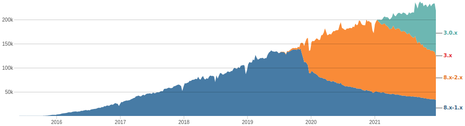
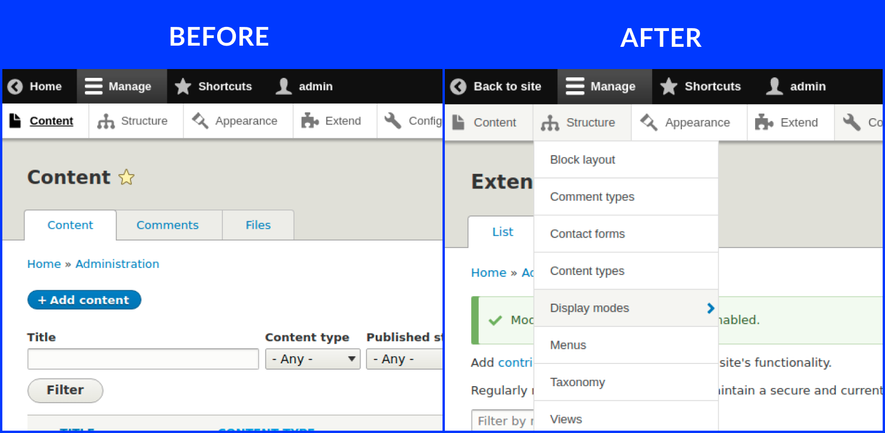
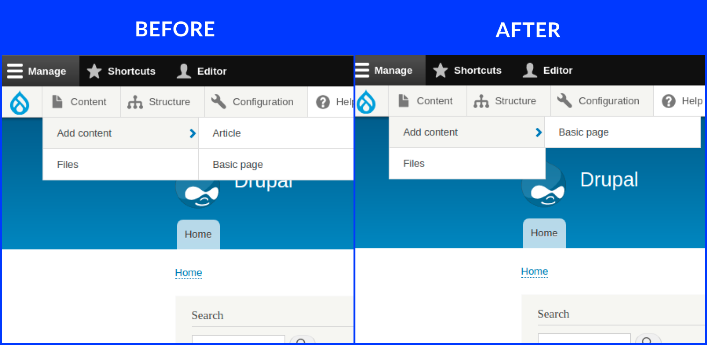
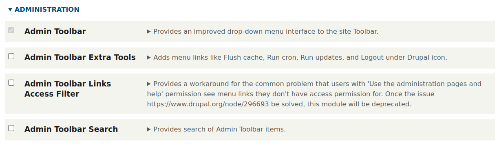
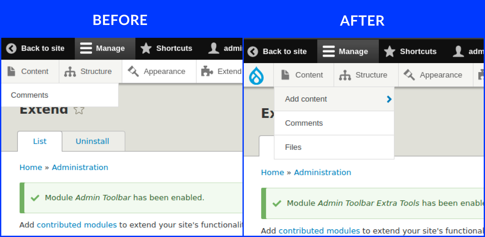
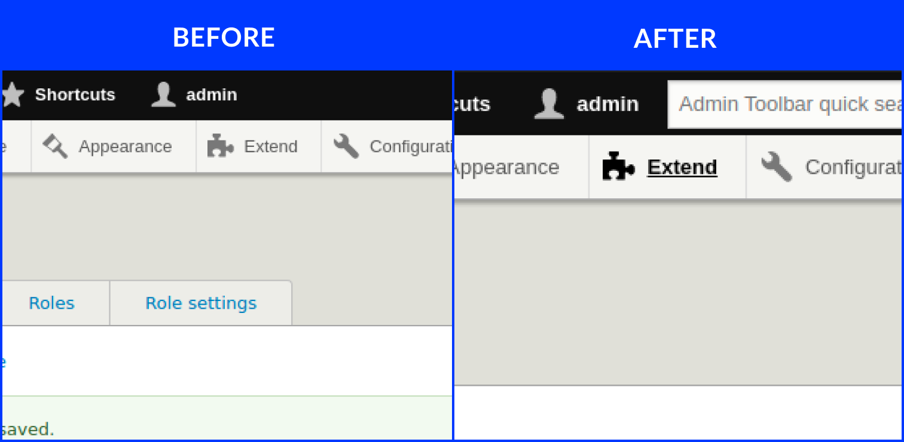

You're not alone. Many Drupal users fall into one of two camps: those who breeze through the interface and those who get lost in a maze of redirects.
If you find yourself in the second group, fret no more! The Admin Toolbar is here to save the day. It's a handy tool that will help you ditch the mental map and find what you need quickly and easily.
Released on April 20, 2015, the Admin Toolbar module has become a go-to solution for Drupal administrators. Currently in its third iteration, it seamlessly integrates with Drupal 8 and 9.
But what truly speaks volumes about its popularity? Over 200,000 websites have utilized the Admin Toolbar since the beginning of 2021 alone! This impressive statistic highlights the impact this module has on improving the Drupal admin experience.

While not part of Drupal's core functionality, the Admin Toolbar module enjoys immense popularity within the Drupal community. You can find it on Drupal.org, the official hub for Drupal modules.
The initial development of the Admin Toolbar is credited to Wilfrid Roze. However, according to Drupal.org, the driving force behind the current version and ongoing improvements comes from Adrian Cid Almaguer and Romain Jarraud.
Drupal boasts a comprehensive set of features, each with its own configuration forms. Often, these forms are nested, requiring you to navigate through multiple menus to reach the desired settings. This can be particularly time-consuming for frequently used actions.
The Admin Toolbar tackles this challenge by introducing a user-friendly drop-down menu system (illustrated in the "Before" and "After" sections you provided). Imagine adding an article: instead of clicking through "Content Types" and then "Article," you can access it directly from a single drop-down list. This streamlined approach saves you valuable time and streamlines your workflow.

The Admin Toolbar understands that different users within your Drupal website might have varying access levels. The module provides the ability to hide links that specific users shouldn't see. This ensures a clean and focused admin experience for everyone.

The toolbar before and after hiding the links.
Adding the Admin Toolbar to your Drupal site is a breeze. Here's a breakdown of the two methods available:
composer require drupal/admin_toolbar

With the installation complete, simply check the checkbox next to "Admin Toolbar" in the "Administration" group under "Configuration" to activate the module. Remember, the other modules listed there are optional add-ons to enrich your toolbar experience.
The Admin Toolbar's capabilities extend beyond its core features. The Admin Toolbar Extra Tools sub-module adds a significant number of helpful links to the toolbar, streamlining common administrative tasks.
While listing every single link would be extensive, here are some examples to pique your interest:
Exploring the Admin Toolbar Extra Tools on your own is highly encouraged. You'll discover a treasure trove of functionalities designed to make your Drupal administration experience more efficient and enjoyable.

This powerhouse sub-module bolsters the toolbar with a plethora of helpful links, streamlining common administrative tasks. While an exhaustive list would be lengthy, imagine having one-click access to actions like cache rebuild, cron execution, or site indexing. Exploring these tools is highly recommended to unlock a treasure trove of functionalities that enhance your Drupal administration workflow.
For those using an older version of the Admin Toolbar, the "Admin Toolbar Link Access Filter" module provides the functionality to hide links for users with specific permissions. This ensures a clean and focused admin experience for everyone. Thankfully, this functionality is already integrated into the latest versions of the Admin Toolbar, eliminating the need for this separate module.
This module adds a search bar to the toolbar, catering particularly to beginners. Simply type a keyword or phrase, and you'll receive a list of relevant links within the toolbar. While advanced users might navigate efficiently without this feature, it can be a valuable time-saver for those new to Drupal's administration interface.

The core Admin Toolbar functionality is impressive, but it gets even better with a variety of extension modules:
While the Admin Toolbar is a popular choice, some users might prefer different approaches:
The Admin Toolbar is a game-changer for Drupal administrators. It streamlines navigation, saves time, and keeps you focused on the task at hand. With its core functionality, extension modules, and the option for alternative approaches, the Admin Toolbar caters to a wide range of user preferences, making Drupal administration a more efficient and enjoyable experience.